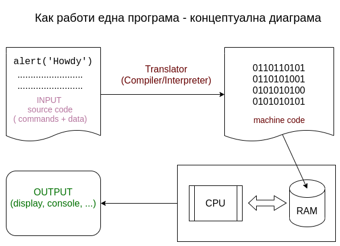
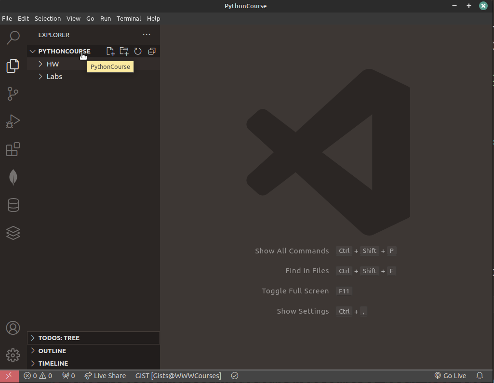
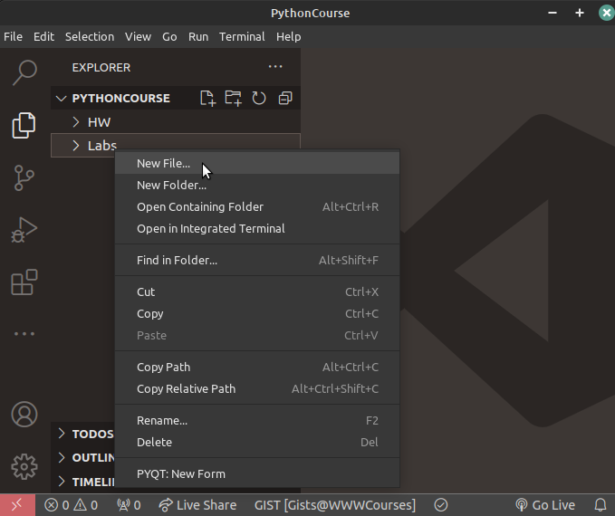
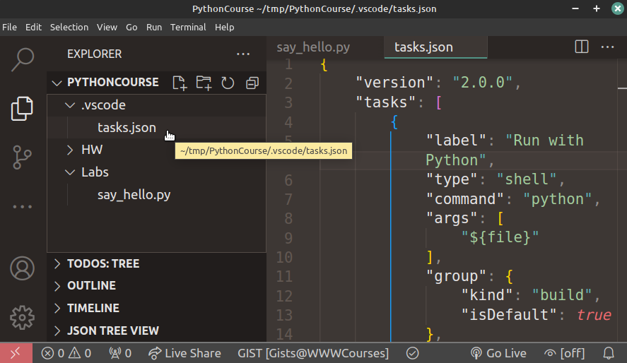

Keyboard shortcuts:
N/SpaceNext Slide
PPrevious Slide
OSlides Overview
ctrl+left clickZoom Element
If you want print version => add '
?print-pdf' at the end of slides URL (remove '#' fragment) and then print.
Like: https://progressbg-python-course.github.io/...CourseIntro.html?print-pdf
Python introduction. Environment setup.
Created for
Iva E. Popova, 2016-2025,

Basic Programming Concepts Overview
How a computer program works?
{kind=link}
- Input: The user writes source code, which consists of commands and data. Example: alert('Howdy').
- Translation: A special program, called a translator (compiler or interpreter), converts the source code into machine code (binary numbers like 0s and 1s) that the computer can understand.
- Execution: The CPU (processor) executes the machine code by reading instructions and processing data, using RAM (memory) for storage.
- Output: The result of the execution is displayed to the user through a screen, console, or another output device.
Video - How do computers read code?
Hello World in various programming languages
Hello World @rosettacode.orgGet familiar with Python Language
Get familiar with Python Language
Python - "Batteries Included"

picture source: @imgur.com
from If programming languages were essays...
{kind=link}
What's the use of Python?
- Python is a general-purpose programming language, used for:
- Web and Internet Development
- System administration (incl. cloud)
- Data Science, Big Data, Machine Learning, AI
- Scientific computing
- Education
- Mobile apps development
- Embedded devices (incl. Raspberry Pi, Arduino, ...)
How a Python program works?
- You write the code
- You type Python commands in a file (e.g., my_program.py).
- Python reads the code
- Python reads your file line by line from top to bottom.
- Python translates the code
- It translates each line into something the computer can understand (binary code: 0 and 1).
- Computer follows the instructions
- The computer does what you said in the code - like printing text, doing math, or saving data.
- You see the result
- The program might show you output on the screen or save it to a file.
Setting up Python
Setting up Python (on Windows, Mac, Linux)
Install Python on Windows - HowTo
- Download the Python3 Installer:
- Python Releases for Windows
- Make sure you download the latest version of Python for Windows (select 32-bit or 64-bit versions according to your system)
- Click on the download link to start the download.
- Run the Installer:
- Once the download is complete, locate the downloaded file (usually a .exe file).
- Double-click on the installer to run it.
- Customize Installation (Optional)
- Check the box that says "Add Python to PATH" during installation. This makes it easier to run Python from the command line.
- Install Python:
- Click the "Install Now" button to start the installation process.
- Python should be installed in C:\Users\YourUsername\AppData\Local\Programs\Python\Python3x
- Reference: Using Python on Windows - installation-steps @docs.python.org
Install Git (and Git Bash - Optional) for Windows
- Download Git for Windows from the official Git website.
- Git for Windows includes Git and a BASH emulation terminal, providing a Unix-like experience (useful for scripting and automation later on Linux/Mac OS).
Install Python on Mac
Install Python on Linux
Verify installation:
- To check for python installed version open a Terminal/Command Prompt/GitBash and type:
# windows: python --version # windows (using py launcher): py --version # Linux, MacOS: python3 --version - If you receive error python command is not found, make sure that Python executable path is in your PATH environment variable.
- Reference: How to Add Python to PATH @realpython.com
- If on Windows the above command open the Microsoft Store, make sure that python installation path is the first one in PATH environment variable list, or check Why does running python.exe open the Microsoft Store?
Using Multiple Python Versions on Windows - py.exe launcher
- The Python launcher for Windows (
py.exe) is a utility which aids in locating and executing of different Python versions. - The
pylauncher will automatically select the most recent version of Python you've installed. - You can also use commands like
py -3.7to select a particular version, orpy --listto see which versions can be used. - References:
- Python Launcher for Windows @python.org
Using Multiple Python Versions on Linux/MacOS - pyenv
- Pyenv is a simple tool to manage multiple versions of Python
- Reference: pyenv @GitHub
Python IDEs and code editors
Python IDEs and code editors
- Visual Studio Code
- a cross platform code editor that supports multiple programming languages.
- Free and open source ( vscode @github )
- Large and vivid community, supported by Microsoft
- Combines the simplicity of a code editor with what developers need for their core edit-build-debug cycle through many extensions.
- VS Code in the browser: vscode.dev
- JetBrains' PyCharm - The Python IDE for Professional Developers
- Sublime Text - Text Editing, Done Right
During the course we will use VSCode.
Write Python in VS Code
Write Python in VS Code
VSCode intro
- Download and install Visual Studio Code from https://code.visualstudio.com/download
- Get familiar with:
- User Interface
- Color Themes
- Using extensions in Visual Studio Code
Useful Extensions
VSCode Workspace
- A Visual Studio Code "workspace" is the collection of one or more folders that are opened in a VS Code window (instance).
- The concept of a workspace enables VS Code to:
- Configure settings that only apply to a specific folder or folders but not others.
- Store and restore UI state associated with that workspace (for example, the files that are opened).
- Selectively enable or disable extensions only for that workspace.
- Persist task and debugger launch configurations that are only valid in the context of that workspace.
- Reference: What is a VS Code "workspace"?
Prepare your Course Folder Structure and Workspace
- Make sure you have next folder structure to work in during the course:
- In Windows File Explorer, right click on 'PythonCourse' folder and select "Open with"=>"Visual Studio Code"
- Now you have a single-folder workspace! 
PythonCourse/
├── HW
└── Labs
{kind=link}
Workspace settings
- Press CTRL+SHIFT+P and type
Workspace Settings - Here you can change the default settings, as you wish in order to customize your experience with your project.
Create and execute a Python program
- Create a Python File:
- Right click on 'PythonCourse/Labs' folder in VS Code Sidebar.
- Select: "New File" and in the input box enter the name:
say_hello.pyand press enter.

- Write down this code (put your name in the quotes):
{kind=link}
my_name = "Iva"
print("Hello " + my_name)
Run your Python program
- You can run your Python program in VSCode by:
- Click Run ▶️ at the top right corner, or
- Right click anywhere on the editor window and select "Run Python File in Terminal"
- Note, this commands will be present, only if you've been installed the extension: python by microsoft
Setup 'Run with Python' Task
- It's more flexible and convenient to run Python program by setting VSCode task. After that we can run Python Program by pressing CTRL+SHIFT+B
- In 'PythonCourse' folder create new folder
.vscode(if there is no one) and in it create the file.tasks.json

- Paste tasks.json code in '.vscode/tasks.json' file:
{kind=link}
Useful Keyboard Shortcuts
Command Palette gives you access to all VS commands in the given context.
| Keys | Action |
|---|---|
| ctrl+shift+p | Opens Command Palette |
| Ctrl+S | Save file |
| Ctrl+Z | Undo what you've typed |
| Ctrl+Y | Redo |
| Ctrl+` | Toggle Terminal/Output panel |
| Ctrl+L | While in terminal will clear the output |
| Ctrl+B | Toggle Sidebar |
| Ctrl+J | Toggle Pannel |
| Ctrl+D | selects the next occurrence after the one you selected. See multi-cursor-selection |
- Reference: keyboard shortcut reference sheet for your platform (macOS, Windows, Linux).
- Useful: More on Editing hacks @VSCode, which is a part of the must-read tutorial Visual Studio Code Tips and Tricks
Useful videos
Useful Readings
How to upload your homework to GitHub using VSCode
How to upload your homework to GitHub using VSCode
- Detailed instructions are given here: GitHubTutorial-Using-VSCode
These slides are based on
customised version of
framework